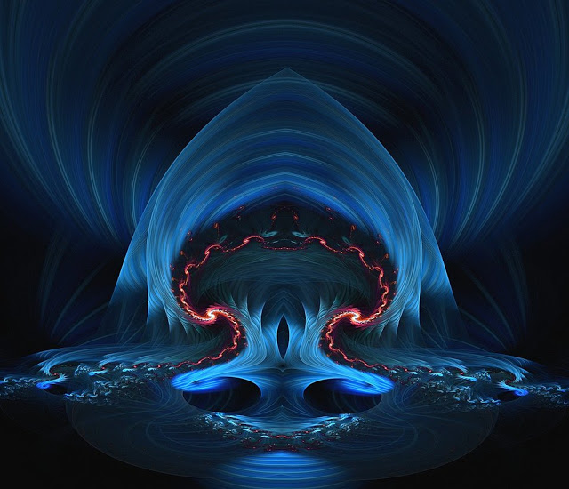

11 Час-Икс
- Сегодня тебе предстоит пройти кольцо смерти. Это - точка невозврата. Мы объединяем кольца наших миров, привязываем тебя на другую ветвь. Даже сейчас ты ещё можешь отказаться и остаться человеком. Потом такой возможности уже не будет. Подумай хорошенько.
Очнулась я примерно в полночь.
- А теперь серьезно, - сказали существа. От насмешливого тона ничего не осталось, - ты отдаешь себе отчет в том, что происходит?
- Да, - ответила я неуверенно.
- Сейчас ты подходишь к точке невозврата. Все это время ты еще могла передумать. После сегодняшней ночи ты останешься вампиром навсегда. Ты это понимаешь?
- Да.
- Ты полностью переходишь в наш род. Осознаешь это? Становишься вампиром в человеческом обличии. Здесь не существует двойного гражданства. Ты переходишь в наш род и отныне, если чего натворишь, спрашивать с тебя будем мы. А уж мы примем эффективные меры!
- Понимаю.
- Для нас понятие смерти не является критичным и окончательным. Для нас смерть - это переход, а кончина - это полное развоплощение, разборка сознания. Это понятно?
- Понятно, - ответила я и ощутила холодок.
- Ты действительно хочешь стать одной из нас?
- Да.
- У тебя было время подумать: мы провели тебя через страх, разочарование и боль. Ты не отказалась идти дальше.
- И не откажусь.
- Тебе никогда не приходило в голову, что кроме тебя и Эдика о нас никто не знает? Ты ведь сама долго сомневалась в нашем существовании. А что, если нас и вправду нет? Может, спецслужбы ставят над вами эксперимент? Или Эдик тоже в нем участвует. Своего рода, вербовщик. А ты просто попалась.. оказалась в нужное время в нужном месте. Ведь ты же слышала, что давно уже ведутся эксперименты по чтению мыслей. Считываются колебания гортани.
- А как же я получаю ваши ответы?
- Ты же чувствуешь, как активировалось твое правое полушарие, как напрягается левое, когда необходимо расшифровывать языковые конструкции. Чувствуешь импульсы, которые бегут в мозгу? Ведь это же новые ощущения, никогда раньше этого не было. Ты даже испугалась поначалу, что у тебя развилась опухоль. Не удивляйся... мы знаем даже то, что ты прячешь в своем подсознании. Сознайся, это ведь не просто голоса в твоей голове. Каждому слогу соотвествует свой импульс в определенной части. Слова да и нет резонируют по-разному, ты чувствуешь, как электричество идет по разным цепочкам, чувствуешь это сильное напряжение. Чувствуешь, как даже временами закладывает правое ухо, легкую боль в зубах справа, когда ток очень усиливается. Верно? А что, если тебе просто в мозг встроили чип? Хотела поиграть в силу темного мира? А спецслужбы решили поиграть с тобой. Как тебе?
Я сжалась.
- Приятного мало, конечно. Но зато убедилась в возможности телепатии, - попробовала я отшутиться.
- А если мы - террористы, которые готовят смертников? Ты понимаешь, что подписала себе приговор?
Я вздрогнула.
- А почему же я слышала вас, хоть и слабо, все эти годы?
- Самовнушение... или легкая шизофрения... или просто детская игра. Как думаешь? А сейчас ты общаешься со своими внутренними демонами. И вскоре, если ты и дальше будешь продолжать эти игры разума, ты рискуешь навсегда остаться в сумерках сознания.
- А это, пульсирующее у меня в мозгу? Тоже результат самовнушения?
- А если это опухоль?
Я почувствовала подступающую панику, но сдержала её.
- Пусть так. Но я готова играть дальше.
- Даже зная, что вскоре ты, вероятно, умрешь?
- Да.
- А если в результате болезни в тебе запустился опасный разрушительный механизм? И тебе надо как можно скорее лечиться, иначе скоро все кончится плачевно?
- Пусть. По крайней мере, теперь мне интересно жить.
Сердце стучало, но паники не было. Ведь это же, по сути, были мои подсознательные страхи, которые невидимые существа сумели вытащить на свет.
- Вот представь... сегодня твоё заболевание дошло до критической точки и твой собственный мозг пытается тебе сказать правду: останови все это! Пока еще не поздно, можно мобилизовать защитные силы и справиться с болезнью. Потом уже будет поздно. А как думаешь, долго живут такие люди? Что если, счет пойдет на годы, а? Ты готова ради своей безумной идеи сыграть ва-банк? Ведь ты же сама сомневалась вначале в нашем существовании. Ты готова идти дальше, даже если мы - болезнь, галлюцинации?
- Да.
Была только одна ниточка: подаренные кольца с узором и угаданные числа.
- А если у тебя провалы в памяти или раздвоение личности? Попросила кого-то рассказать им о кольце, потом забыла.
- Тогда мне хана...
- Ты готова даже умереть ради того, чтобы достигнуть цели?
- Да.
- Ну хорошо, убедила. Пусть мы существуем. Но Великой Силы Темного мира тебе никто не даст просто так. Это не игрушка. За каждую новую возможность ты берешь на себя ответственность.
- А увидеть галерею миров?
- Да увидишь! И не только увидишь, но и поработаешь там. Обещали - сделаем, успокойся. А что касается остального - осторожно и по согласованию с нами. Игры кончились.
-
Разговор продолжался почти до рассвета. Я ощущала, что у меня начали выбивать почву под ногами, но сопротивлялась. Ближе к рассвету услышала.
- Ну что? После всего, что мы тебе сказали, ты и в самом деле хочешь стать вампиром? Даже если мы болезнь. Несмотря на то, что ты связываешь свою жизнь с нечистью из темного мира?
- Да.
- Но ПОЧЕМУ?!
- Это даже не теорема Фёрма, ребята, - я хотела ответить, - это загадка всей моей жизни. Я столько лет потратила на эту тайну. Я хотела умереть при жизни, чтобы разгадать её, а не ради острых ощущений. Я не смогу жить как все остальные люди. Даже если у меня будут деньги, слава и власть. Мне необходимо стать собой, настоящей. Даже если вы сотрёте мне память, я все равно продолжу искать, метаться в потемках, что со мной не так и чего мне не хватает. Если я сейчас откажусь и вы исчезнете, я буду потом себя проклинать всю оставшуюся жизнь. Просыпаться в полнолуние и с болью глядеть на луну, буду метаться, ощущая отзвуки таинственной страсти во мне. Не знаю, правду ли вы мне сказали или очередную сказку - испытание инициации, но я чувствую в себе что-то несдешнее, здесь меня не обманешь. Вы правы, я действительно ребенок, которому нужно вернуться домой. В запредельный дом. Да, я согласна. Ва-банк. Стану нечистью как вы. Да ведь я давно отчасти была такой. Вы уже пытались меня инициировать, мы обменивались энергией, вы были рядом. Так что - делайте. Если вы меня кинете - это будет подло. Но даже в этом случае с моей стороны не будет претензий, я не побегу никому жаловаться. Даже мифическому другу Эдика, который Иисуса знал с детства. Наши дела это наши дела и я не буду никого в них вмешивать.
- По рукам. Тогда подпиши договор.
- Какой договор?
- Который подтвердит твоё согласие. Не бойся, ничего о продаже души дьяволу там не будет. Хотя.. все зависит от того, как это воспринимать. Чего ждешь? Подписывай, раз уж согласилась.
- Кровью?
- Можешь и кровью, если хочешь спецэффектов... хотя, лучше не делай этого - если тебе не жалко крови, мы найдем ей другое применение. А так, достаточно просто написать хоть стилусом хоть пальцем на стенке невидимую надпись, чтобы не пришлось заметать потом следы. А ты хотела эффектного зрелища? Полыхающий огненный пергамент или что-то в этом духе? Это можно, конечно, но нам совсем не хочется нечаянно поджечь твои бумажные обои.
- Да я уж поняла. Работаете просто, жестко, но эффективно.
- Именно. Готова писать?
- Да.
- Пиши: я - твоё полное имя - согласна стать вампиром и умереть ради трансформации. Дата, подпись. Закрой глаза.
Перед закрытыми глазами возник пергамент, его края полыхали. На нем были выведены прописью указанные строки. Там же была моя подпись. Потом появились еще несколько подписей и была поставлена печать. Что было написано на печати - я не разглядела.
- Ну всё. Дело сделано, - сказал голос, - теперь ты наша. Молодец. А сейчас спи, вскоре нам надо будет завершить третью фазу. Поговорили и будет, нам надо работать.
- Какую фазу?
- Это и есть кольцо смерти, - послышался голос внутри, - Мы показали тебе, кто ты есть, вывернули тебя наизнанку, открыли тебе все твои самые неприглядные стороны, чтобы ты посмотрела на себя честно. Наждачкой соскребли все лишнее и оставили наслаждаться. Смерть происходит не только на физическом плане, но так же идет психологическая перестройка. Такова работа. Мы убиваем несмышлёныша, надеющегося на чудо, в результате родится повзрослевший вампир, которое умеет за свое чудо воевать, отвоевывать его зубами и когтями. Который четко знает, чего хочет.
